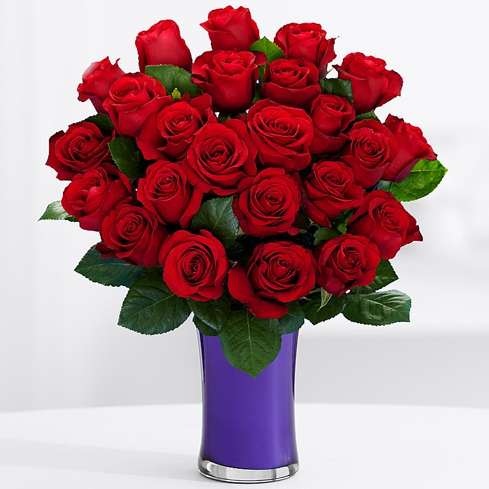
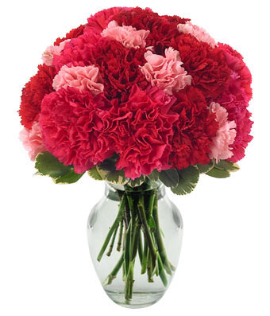
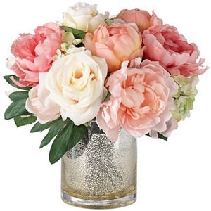

Roses
6:$20 12:$35 12 with Vase:$50
The rose is a versatile flower, coming in many different varieties and colors. Common shades include red, purple, orange, pink, peach, and white. Roses can be used for almost any occasion, such as birthdays and holidays. Depending on the variety, roses typically last 4-7 days in water. The most common type of rose is the red rose, which typically is an expression of love.
Carnations
6:$20 12:$35 12 with Vase:$50
The carnation has been in cultivation for well over 2,000 years, leaving its origin unknown. Due to its long history of cultivation, carnations can be found in many different colors ranging from red, pink, white, yellow, bi-colors, and flecked. It is a jack of all trades flower, with its many diffrent collors and varieties. Carnations in general have a meaning of fascination or a woman's love. The flower itself usually last 7-14 days given the right conditions.
Peonies
6:$18 12:$30 12 with Vase:$45
Peonies produce large, often fragrant flowers. Typically, they come in shades of white or yellow, but can be cultivated with other flowers for exotic colors. Peonies are native to Asia, Southern Europe and Western North America. Peonies need little care and can even live through winter. They typically last around 7-14 days in a vase, but they really shine when planted, with huge lifespans over years. peonies are known as the flower of riches and honor. With their lush, full, rounded bloom, peonies embody romance and prosperity and are regarded as an omen of good fortune and a happy marriage.